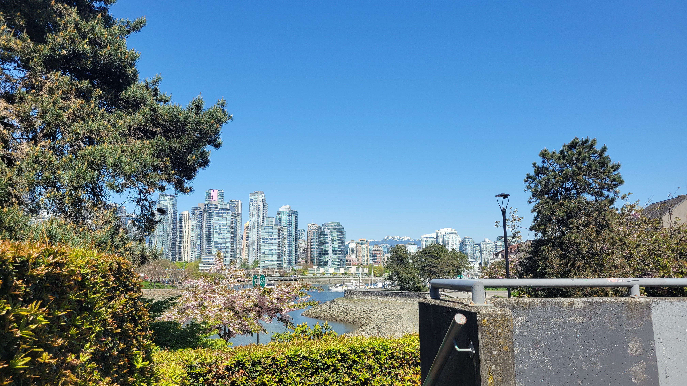

<html>

<head>

  <title>Point Map</title>
  <meta charset="utf-8" />
  <meta name="viewport" content="width=device-width, initial-scale=1.0">

  <!-- Source for your Leaflet JavaScript and CSS -->
  <link rel="stylesheet" href="https://unpkg.com/leaflet@1.9.4/dist/leaflet.css"
    integrity="sha256-p4NxAoJBhIIN+hmNHrzRCf9tD/miZyoHS5obTRR9BMY=" crossorigin="" />
  <!-- Make sure you put this AFTER Leaflet's CSS -->
  <script src="https://unpkg.com/leaflet@1.9.4/dist/leaflet.js"
    integrity="sha256-20nQCchB9co0qIjJZRGuk2/Z9VM+kNiyxNV1lvTlZBo=" crossorigin=""></script>

  <script src="../reference/parks-polygon.js" charset="utf-8"></script>

</head>

<body>
  <div id="mapid" style="height: 100%;"></div>


  <script>

  var mymap = L.map('mapid').setView([49.259, -123.137], 12);

   var Thunderforest_Neighbourhood = L.tileLayer('https://api.thunderforest.com/neighbourhood/{z}/{x}/{y}{r}.png?apikey={apikey}', {
	attribution: '&copy; <a href="http://www.thunderforest.com/">Thunderforest</a>, &copy; <a href="https://www.openstreetmap.org/copyright">OpenStreetMap</a> contributors',
	apikey: '81fa11e1d1ae4749928e96b9f0c39521',
	maxZoom: 22
}).addTo(mymap);


    var outlookPopup = "<br>Resting spot with an outlook";

    // specify popup options 
    var outlookOptions =
    {
      'maxWidth': '210',
      'className': 'custom'
    }


    L.marker([49.26711745383916, -123.13196318772637],).bindPopup(outlookPopup, outlookOptions).addTo(mymap);


    // L.geoJson(parkspolygon, { onEachFeature, style: style }).addTo(mymap);

    //   function onEachFeature(feature, parkspolygon) { if (feature.properties && feature.properties.park_name) { parkspolygon.bindPopup(feature.properties.park_name); } }

    // function style(feature, parkspolygon) {
    //   return {
    //     fillColor: '#2aa858',
    //     color: '#71c791',
    //     weight: .5,
    //     fillOpacity: 0.8
    //   };
    // }


  </script>


</body>

</html>